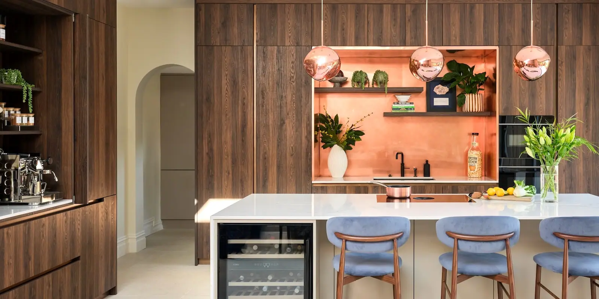
Brushed copper sheets from Halman Thompson deliver the delightful colour and character of copper into the 21st century. The brushed finish makes the most of the rich, deep lustre we know and love and brings it completely up to date.
Brushed copper sheets are a multipurpose material that can be used as splashbacks , worktops , wall panels , bar tops , kitchen plinths and much more. It’s incredibly flexible!
Halman Thompson creates every sheet by hand. Simply provide the shape, size and any special requirements and we’ll create your piece to your exact specifications.
Choose a finish
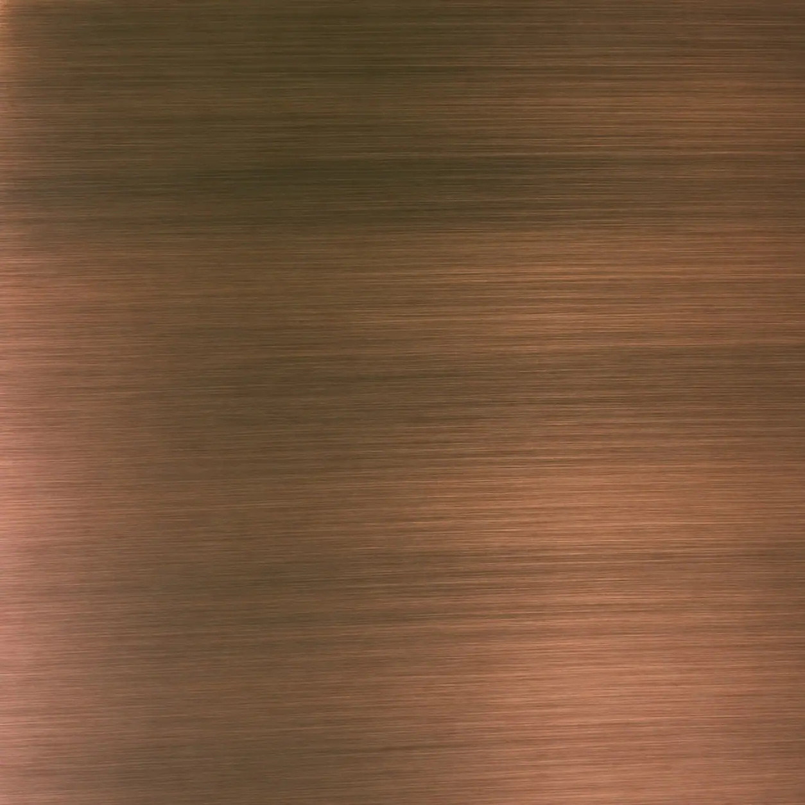
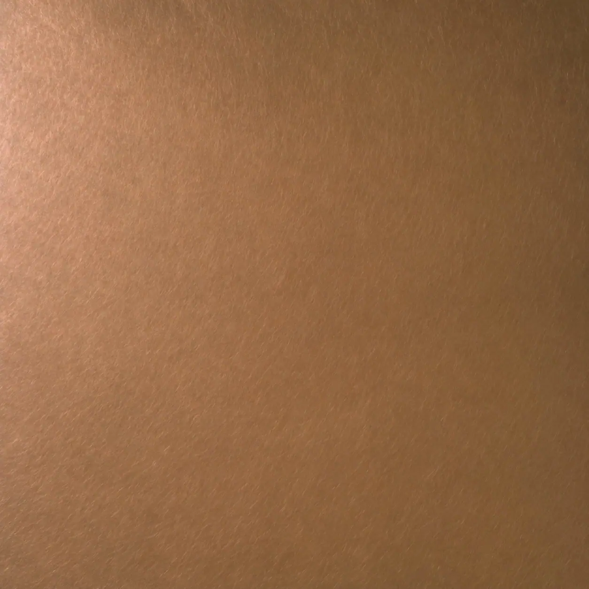
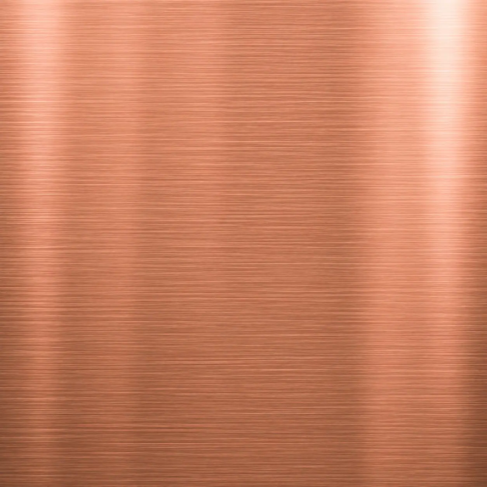
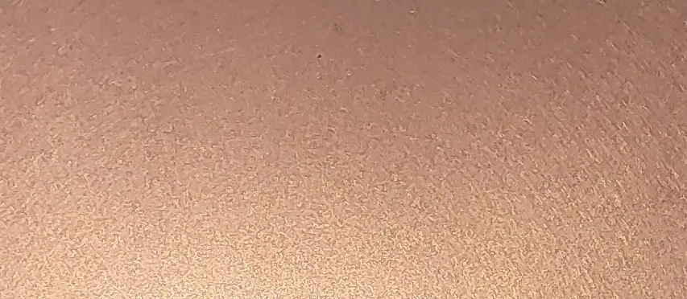
Cut to size
The brushed copper finish can be purchased in sheets cut to your size, perfect for your project.
- Pricing includes delivery and turnaround time is 5-8 weeks
- Each piece is coated in a gloss finish lacquer to protect the brushed textured surface
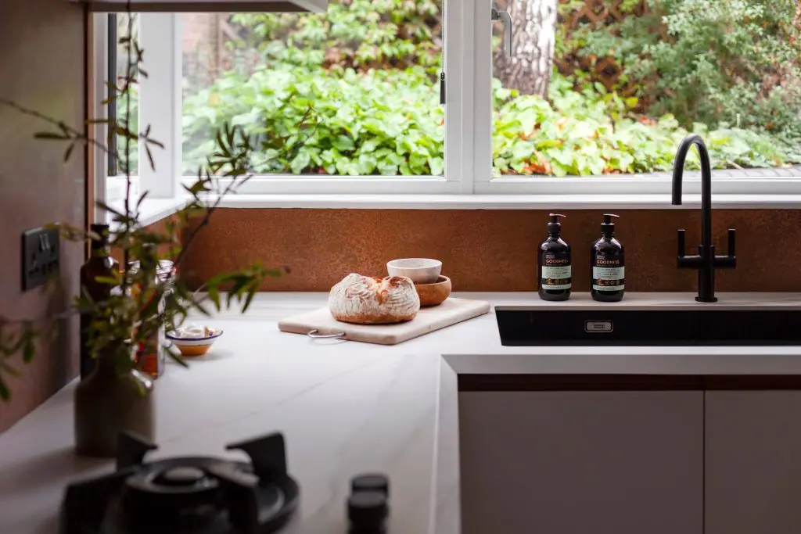
Ready to fitReady to go
We can provide bespoke cut metal with each of our finishes being lacquer finished.
Please get in touch for a bespoke quote .
- Cut to your size
- Any of our finishes
- Lacquer finished
- 5–8 weeks, made to order
Handmade brushed copper sheets
Sometimes it’s worth spending a little extra on something special. We believe our brushed copper sheets are definitely something special!
Brushed copper is created using a specialist brushing technique. It takes a standard copper sheet and adds a completely different texture and character, elevating it above the norm.
The artisans here at Halman Thompson create every brushed copper sheet by hand, to order.
We begin by cutting the sheet to the exact dimensions you requested using a precision laser. We then soften the edges and prepare the copper for the next step in the process.
We then use our specialist brushing technique to create the perfect finish we’re looking for. This results in a beautifully textured surface that adds depth and character to our copper sheets.
Once the copper is exactly how you want it, we seal the metal in tough, transparent lacquer. That lacquer retains the look and feel of the copper and protects it from everyday life.
Commissions can be any shape or size. Designs larger than 2000mm x 1000mm will be made up of multiple copper sheets. They will be prepared at the same time by the same artisan so they look as alike as possible.
There may be slight variations in brush patterns, but we are experts at what we do and assure you that everything will look amazing!
Specially crafted brushed copper sheets
The beauty of hand crafting products is that you can select the exact colour, finish, shape and size.
We create everything to order, by hand and can cut copper sheet into any dimension you require. Provide the full measurements when you order, tell us the finish you want and we’ll do the rest!
Every piece will be unique, with nothing exactly the same anywhere in the world!
Have a design in mind? Want to create bespoke brushed copper sheets? Looking for something genuinely unique as a statement piece? Halman Thompson can help!
Complete the bespoke order form or contact us to discuss your needs and we’ll create something truly unique!
Frequently Asked Questions
You can order a zinc or steel product through our store using the order form. Select the zinc or steel finish you want, the desired thickness and add it to the cart. For bespoke orders, use the contact form to tell us the exact finish, size, shape and design and we’ll put together a quote and go from there.
As we create everything by hand, there is usually a 5-8 week turnaround time for most zinc or steel finishes. If your order is particularly large or complex, it may take longer. We will provide a firm deadline once you place your order. If you need a faster turnaround time, contact us directly and we will see what we can do.
The finish will be very much like the sample we sent or what you see on screen. Our artisans create everything by hand and while we make every effort to deliver precision, there may be minor variation in colour, pattern or patina.
You can use the product however you like once it arrives. How you fix it depends on the product in question. Many products like splashbacks can be installed using adhesive. Zinc and steel worktops and plinths can come affixed to wood and be fastened into place in the usual way. We provide full fitting instructions with every product, so you’ll always know what to do.
Looking after your zinc or steel product is easy. They are amazing metals that are resistant to most things. We provide full care instructions with every order, so you’ll know exactly what to do.
You can order any size you like and we do create large sizes. The largest sheet size is 2000mm x 1000mm. If your order exceeds these dimensions, it will be made up of multiple sheets.
Yes, we can cut shapes or designs. We use precision laser cutting and can integrate detailed designs into any sheet metal product. If you have something specific in mind, use the contact form for a bespoke quotation.
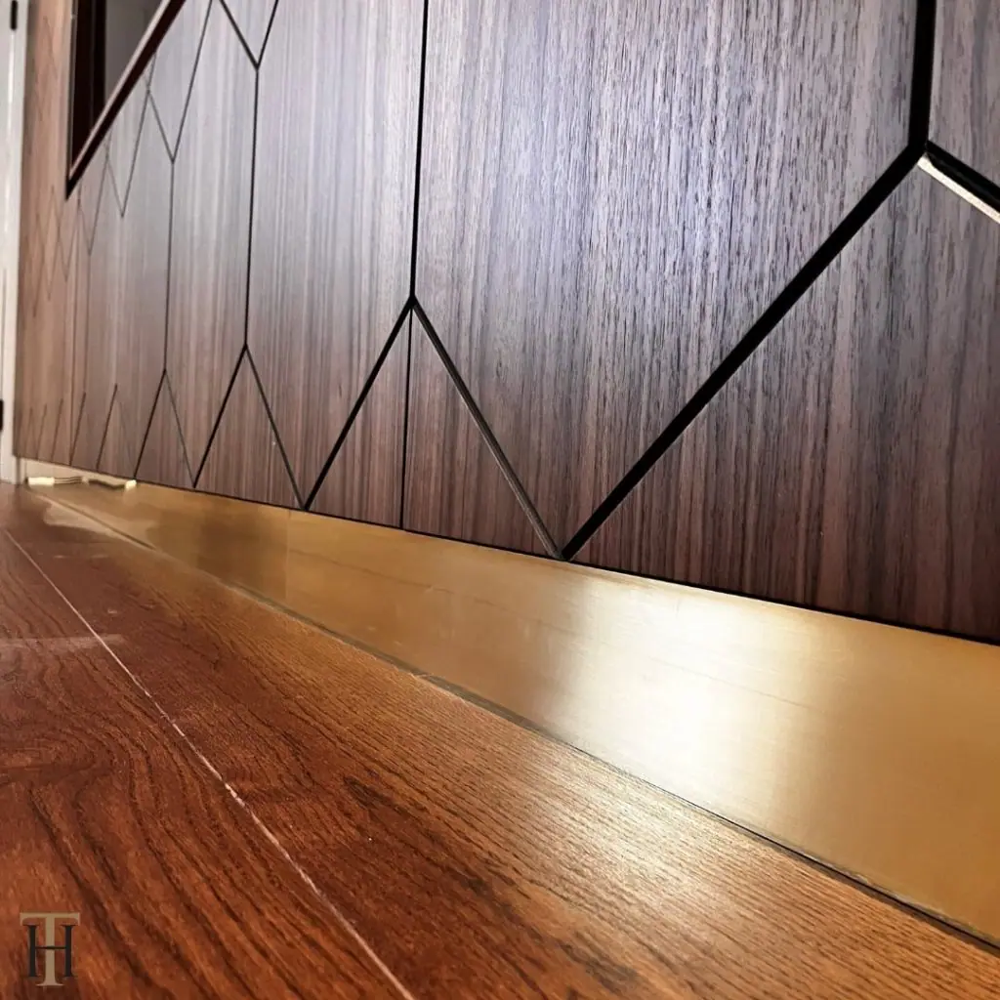
Copper finishes
All 21 finishes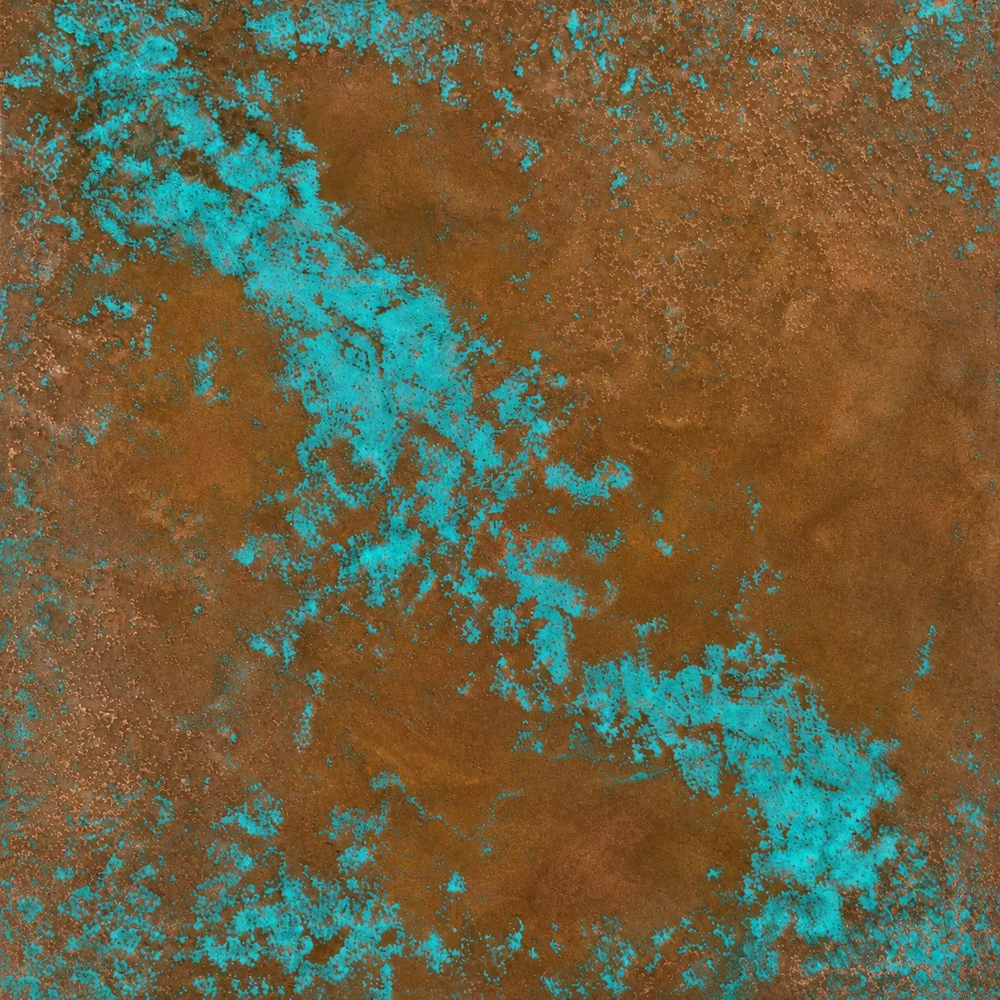
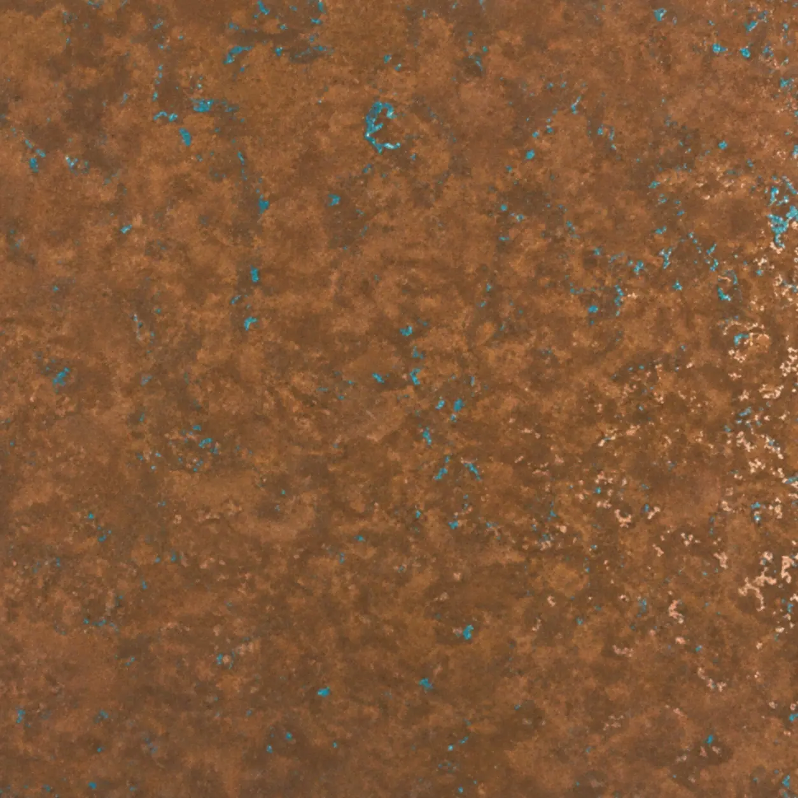
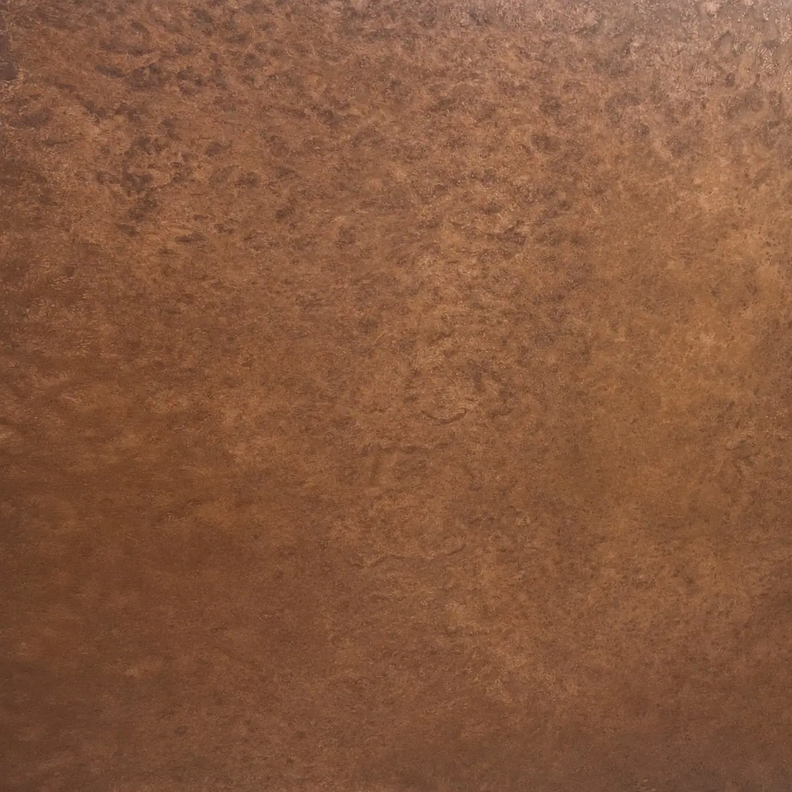
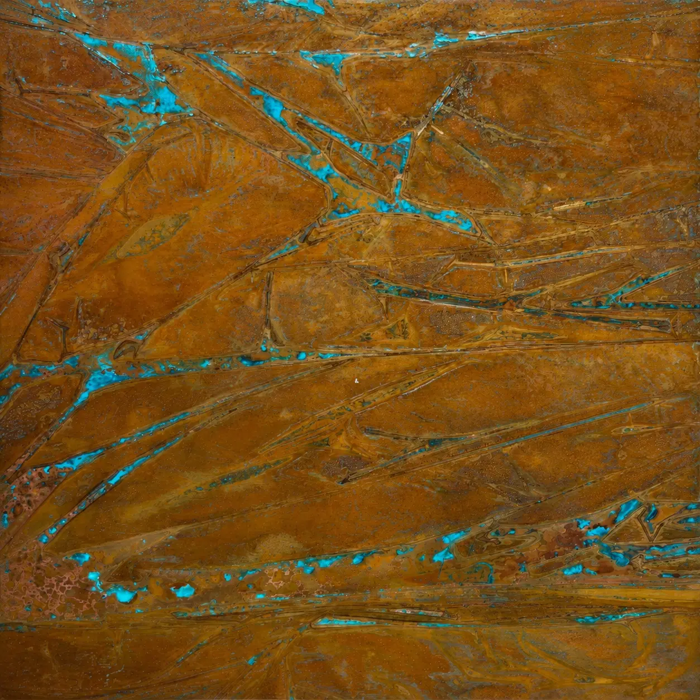

If you can dream it, we’ll make it.
Bars, balustrades, staircases, worktops, cladding and pieces that don’t have a name yet. Our designers and craftspeople work in brass, copper, zinc and steel, and alongside wood.